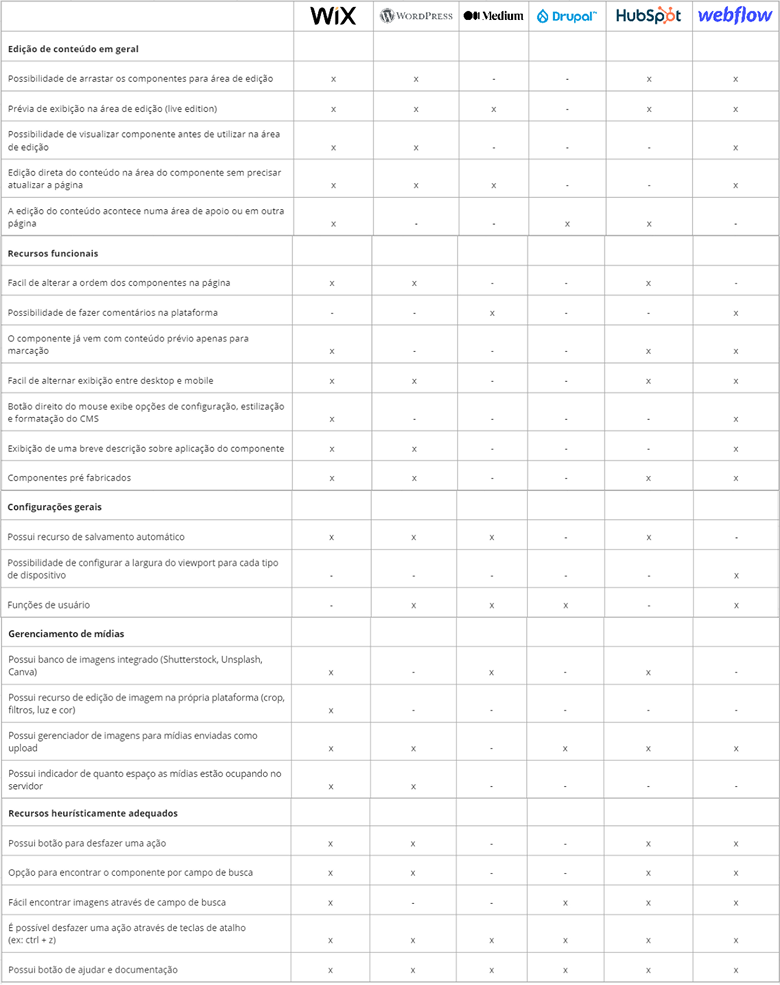

Academic content production at scale
At YDUQS, digital educational content production is a continuous, highly complex operation. Dozens of Learning Experience Designers (LXDs) create materials for thousands of students across multiple brands and modalities.
The CMS in use was Strapi — powerful as a backend, but with an editing interface designed for developers, not content creators. LXDs relied on multiple external tools (Figma, spreadsheets, documents) to assemble, preview, and validate content before publishing.
The result: a fragmented, slow, and error-prone workflow — incompatible with the scale and speed the business demanded.
Creating content shouldn't require 3 tools
The problem wasn't a lack of tools — it was an excess of them. Each step of the process lived in a different place, and information was lost between transitions.
Disconnected tools
LXDs alternated between Strapi, Figma, and spreadsheets for a single task. Each context switch consumed time and created inconsistency risk.
High cognitive load
Strapi's interface required technical knowledge for simple tasks. Configuring a visual component meant navigating JSON fields and nested dropdowns.
Academic precision
Educational content demands rigor. Formatting, ordering, or hierarchy errors directly impact the student's learning experience.
Deadlines and stakeholders
Multiple teams depended on the content: coordination, review, publishing. Delays in one stage cascaded to all others.
Every workflow failure had a real cost
- Disconnected tools increased production time by up to 40% — each piece of content went through 3 different environments before being published.
- Technical CMS interface created support dependency — LXDs needed help for tasks that should have been autonomous.
- No preview meant errors were only discovered after publishing, generating rework and emergency fixes.
- Fragmented workflow made it impossible to estimate deadlines accurately — nobody knew how long each step actually took.
- Visual inconsistency across content from different LXDs hurt the student experience and brand quality perception.
Four bets that defined the product
Centralize creation within the CMS
Decision: Eliminate the need for external tools to assemble and preview content.
Rationale: Every tool switch is an opportunity for error and time loss. An integrated workflow reduces friction and increases speed.
Visual interface instead of technical configuration
Decision: Replace JSON fields and dropdowns with direct manipulation of visual components.
Rationale: LXDs are content creators, not developers. The interface needs to speak their language.
Direct component manipulation
Decision: Drag-and-drop, inline editing, and visual reordering as primary interactions.
Rationale: Reduce the distance between intention and action. What the LXD sees is what the student gets.
Preview before publishing
Decision: Implement real-time preview that simulates the student's final experience.
Rationale: Eliminate the "publish → discover error → fix → republish" cycle that consumed hours weekly.
What we accepted to simplify
Simplifying a complex workflow requires tough choices. Every decision to "remove" something is also a decision to "prioritize" something else.
Understanding the problem before designing
Existing workflow analysis
We mapped the complete content creation workflow: from briefing to publishing. We identified 7 friction points and 3 unnecessary handoffs between tools.
Direct interaction with LXDs to understand real pain points, workarounds, and unmet needs.
Criteria analyzed
- Native drag-and-drop
- Real-time preview
- Inline editing
- Autosave
- Undo/redo
- Component search
Workshop with users
Co-creation sessions with LXDs revealed the priority needs:
- Clear component categorization
- Variant preview before applying
- Accurate preview before publishing
- Component swapping without content loss

Product pillars
Based on the discovery, we defined three pillars that guided all design and prioritization decisions:
Productivity
Reduce the time between "having the idea" and "publishing the content." Fewer clicks, fewer context switches, less waiting.
Experience
Make content creation enjoyable, not bureaucratic. Visual interface, immediate feedback, direct control.
Consistency
Ensure all published content follows the same visual and structural standards, regardless of who created it.
"We prioritized using RICE (Reach, Impact, Confidence, Effort) to ensure each feature delivered real value before moving on to the next."
Wireflow — Wireframe + User Flow
Before designing screens, we mapped the complete journey in a wireflow combining low-fidelity wireframes with the navigation flow. This allowed us to identify friction before investing in UI.
From briefing to publishing
Each screen mapped with its inputs, outputs, and decisions. Friction points identified and eliminated before visual design.
Features that transformed the workflow
Drag-and-drop
Drag components directly into the editing area. No complex menus, no prior configuration.
Inline editing
Edit text, images, and settings directly on the component, without opening side panels or modals.
Real-time preview
See exactly how the student will view the content, in real time, during editing.
Simple reordering
Move components up and down with a gesture. Reorganize an entire lesson in seconds.
Reusable components
Standardized component library integrated into the editor. Consistency guaranteed by design.
Autosave
Continuous automatic saving. No work lost, no interruption to the creative flow.
Integration with Factory DS
LXD Creator was built on top of the Factory Design System, ensuring all editor components followed the same visual and interaction standards of the YDUQS ecosystem.
This integration brought three direct benefits:
Consistency
Editor components inherit tokens and patterns from the DS. Any system update propagates automatically.
Scalability
New content components follow the same structure. Scaling the library means adding, not rebuilding.
Reuse
Editor components are the same ones the student sees. One source of truth for creation and consumption.
From editor to publishing — a continuous flow
LXD Creator's differentiator is eliminating transitions between tools. Content is born, edited, reviewed, and published in the same environment.
Visual Editor
Creation interface with drag-and-drop, inline editing, and real-time preview.
Components
Standardized library integrated with Factory DS. Consistency guaranteed by design.
CMS (Strapi)
Backend that stores and versions content. Invisible to the LXD — all interaction is via the visual editor.
Publishing
Content published directly to the student platform. One click, zero handoff.
Product results
- 3 disconnected tools
- Fragmented and slow workflow
- Errors discovered after publishing
- Technical support dependency
- Inconsistency across content
- 1 integrated workflow
- Visual and direct creation
- Real-time preview
- Full LXD autonomy
- Consistency guaranteed by design
What changed in operations
Greater autonomy
LXDs started creating and publishing content without relying on technical support or intermediate approvals.
Less rework
Real-time preview eliminated the "publish → discover error → fix" cycle. Errors are caught before going live.
Lower cognitive load
The visual interface reduced mental burden. Creating content became about content, not configuration.
Greater speed
Average production time dropped significantly. Teams can deliver more with the same headcount.
What this project taught me
- Internal tools are products. They deserve the same rigor in research, design, and iteration as external products. Daily users deserve an excellent experience.
- Productivity is UX. Reducing clicks, eliminating context switches, and providing immediate feedback are experience decisions with direct business impact.
- Simplifying the workflow generates more impact than adding features. Removing unnecessary steps had more effect on productivity than any new functionality.
- Co-creation accelerates decisions. Involving LXDs from discovery reduced validation cycles and increased confidence in design decisions.
- Design System as an accelerator. Building on Factory DS allowed us to focus on the product problem, not on reinventing components.